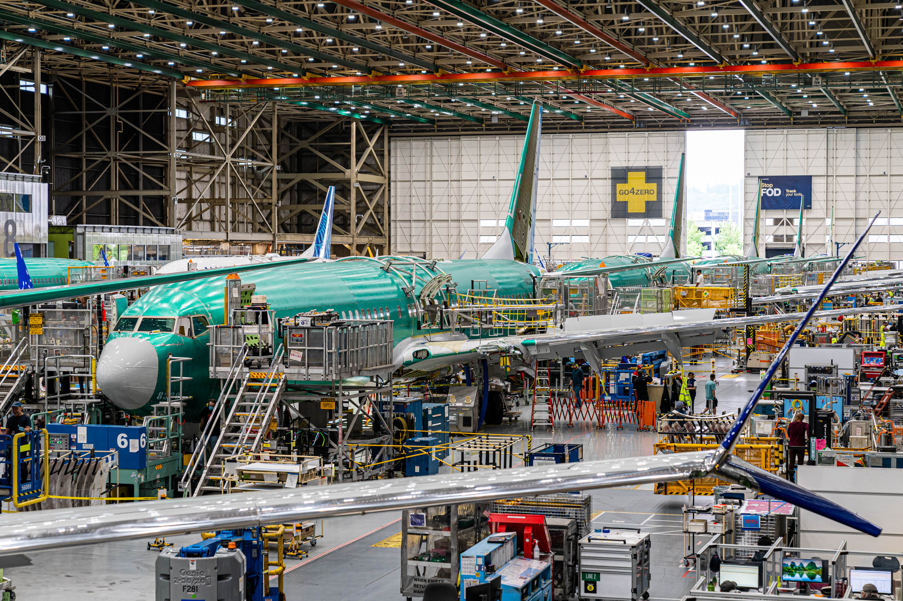

Due to NDA, images and videos will not be shared.
Throughout my internship, I developed data-driven tools to improve manufacturing visibility and support engineering decision-making across Final Manufacturing Engineering. I built interactive dashboards using HTML, JavaScript, and SQL to automate monthly Plan-to-Perform (PtP) reporting, monitor Final Assembly process health, and analyze manufacturing and integration trends, allowing engineers to quickly identify production issues and track operational performance. I also developed a SQL Server (SSMS) and JavaScript-based PMI dashboard that compared team and shift performance metrics, allowing for leadership to uncover performance trends and complement existing Tableau reporting with more detailed analysis.
Beyond dashboard development, I represented Mechanical Engineering during Tier 3 and Boardwalk meetings by communicating SAT-related manufacturing issues, coordinating with cross-functional teams, and providing engineering insight to improve issue resolution.
I also led root cause investigations into supply chain part and sealant issues, identifying inconsistencies in internal data structures and documentation processes.
In addition to manufacturing analytics, I contributed to the development of a non-contact strain measurement capability for the Structures Concept Center by enhancing an existing Python-based Digital Image Correlation (DIC) workflow for a Raspberry Pi camera system. I validated measured strain data against finite element analysis (FEA) and hand calculations while conducting physical testing using an Instron machine to evaluate measurement accuracy and repeatability. To support experimental testing, I designed a custom fixture in CATIA that improved the consistency of the testing setup and enabled more reliable strain measurements. This work combined computational analysis, experimental validation, and mechanical design to help establish an accessible, low-cost structural testing workflow for future engineering applications.